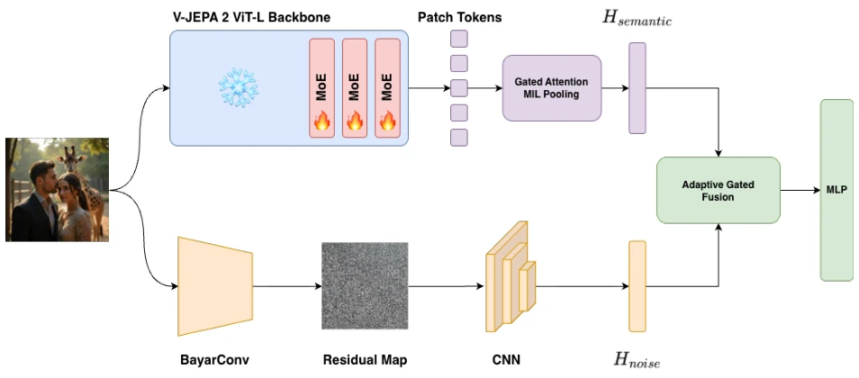
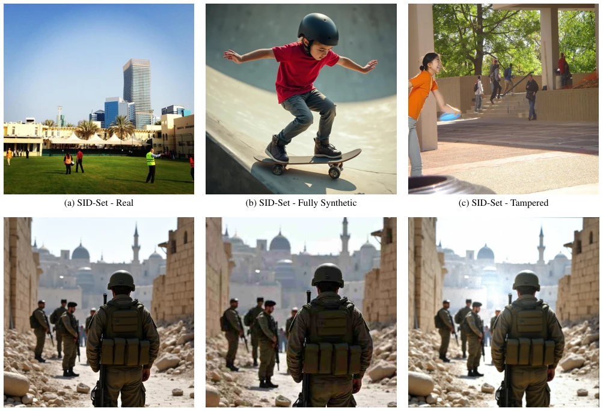

这篇论文给深度伪造检测领域来了个“降维打击”，试图用世界模型（World Model）的语义理解来揪出 AI 生成的假图。作者很聪明，知道光靠 ViT 的宏观语义不够，还得抓微观的高频噪声，于是搞了个双流架构。MoE-JEPA 这名字起得挺响亮，把 V-JEPA 2 当骨干，再塞进残差 MoE 和门控注意力 MIL，最后还加了个 BayarConv 噪声分支。效果确实不错，SID-Set 上 95.54% 的准确率吊打了一些大模型。不过，吐槽一下，这本质上还是 CV 任务，跟具身智能（Embodied AI）关系不大，硬蹭“世界模型”概念有点为了创新而创新。而且那个噪声分支其实就是个受限卷积，被包装成了“高频痕迹”，虽然有效但不够性感。总的来说，是个扎实的工程改进，但别指望它能帮机器人看懂世界，它只是帮人类看清 P 图罢了。
This paper delivers a "dimensionality reduction strike" to the field of deepfake detection, attempting to use the semantic understanding of World Models to expose AI-generated fake images. The authors are astute, knowing that relying solely on the macro semantics of ViTs is insufficient and that capturing micro high-frequency noise is also required, thus developing a dual-stream architecture. The name MoE-JEPA is quite impressive, using V-JEPA 2 as the backbone, incorporating Residual MoE and Gated Attention MIL, and finally adding a BayarConv noise branch. The results are indeed good, with 95.54% accuracy on SID-Set outperforming some large models. However, a critique is in order: this is essentially a CV task, having little to do with Embodied AI; forcing the "World Model" concept seems like innovation for innovation's sake. Moreover, that noise branch is essentially a constrained convolution, packaged as "high-frequency traces"; while effective, it is not particularly elegant. Overall, it is a solid engineering improvement, but do not expect it to help robots understand the world; it merely helps humans see through photo manipulation.
With the widespread adoption of generative models such as DALL-E 3 and FLUX, deepfakes are rampant, posing a serious threat to information integrity [13]. Existing detectors are mostly based on Vision Transformers (ViTs), which excel at global semantic understanding but often struggle to capture fine-grained forgery traces, particularly when facing degradation scenarios such as social media compression [16]. The strong semantic abstraction of ViTs tends to mask micro-generation artifacts, resulting in insufficient robustness in real-world deployment. Furthermore, while large vision-language models offer strong performance, their computational costs are prohibitively high for real-time deployment [21]. Therefore, how to combine the physical prior knowledge of World Models with high-frequency noise features to construct a lightweight and robust detector has become a critical issue. The authors note that the visual reality understanding acquired by JEPA models during latent space prediction can serve as a strong prior for detecting synthetic inconsistencies, compensating for the limitations of traditional ViTs.
MoE-JEPA employs a dual-stream architecture to process semantic and noise information separately. The semantic branch uses V-JEPA 2 as the backbone, where input images are duplicated to simulate video streams. The initial layers of the backbone encoder are frozen to preserve pre-trained knowledge, while the final three Transformer blocks are replaced with Residual MoE modules. This module comprises a frozen shared expert and a trainable set of dynamically routed experts, employing a normalized Sigmoid gating mechanism to prevent routing collapse and balance the load. Subsequently, the Gated Attention MIL module performs spatial routing on tokens to suppress background semantics and focus on tampered regions. The noise branch directly processes raw images, utilizing constrained convolution layers (BayarConv) to extract high-frequency residual maps and capture micro traces introduced by the generator. Finally, an adaptive gated multimodal fusion module dynamically adjusts the weights of the two feature paths, feeding the fused vector into the classification head. This design leverages the World Model's macro consistency understanding while compensating for local high-frequency artifacts via the noise branch, effectively addressing degradation brought about by social media transmission.

Figure 1. Overview of the MoE-JEPA architecture. The semantic branch (top) uses a V-JEPA 2 backbone, a MoE module, and a Gated At- tention MIL module to semantically suppress pristine backgrounds and isolate localized tampering (Hsemantic). In parallel, the noise branch (bottom) applies a constrained BayarConv layer to extract high-frequency generative and sensor artifacts (Hnoise). These complementary features are joined using an Adaptive Gated Multimodal Fusion module and classified via an MLP head.
Experiments were conducted on two benchmarks: SID-Set and RRDataset. SID-Set comprises 300,000 real, fully synthetic, and locally tampered images, simulating social media environments. MoE-JEPA achieved 95.54% accuracy on this dataset, surpassing large models such as SIDA-13B, and demonstrated balanced performance across categories, avoiding the issue of certain models collapsing on the real class. On RRDataset, for severely degraded images, the model achieved 84.11% accuracy, performing best on the Re-Digitalization split, outperforming VLMs such as GPT-4o. Ablation studies indicate that introducing the noise branch improved the detection rate by over 10%, the MoE mechanism improved by nearly 15%, and Gated MIL further consolidated spatial localization capabilities. The results demonstrate that the dual-stream architecture and MoE design effectively balance global semantics and local noise features.

Figure 2. Visual examples from the SIDSet and RRDataset. The top row presents images from the SID-Set benchmark across the three categories: Real, Fully Synthetic and Tampered, while the bottom row displays an image of RRDataset in the three degradation split present in the benchmark: the pristine Original format, the Transmission split (subject to social media compression), and the Re-Digitalization split (captured via screen recapture).